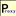

Proxy ON/OFF Button
Plugin Enable
Enable
Proxy Mode
Mode
Default(Not changed)
System
Direct
Fixed Servers
Auto Detect
Pac Script
Fixed Servers Config
Host
Port
Pac Script Config
Pac Script URL
About
Proxy ON/OFF Button for chrome extension.
author
@betarium